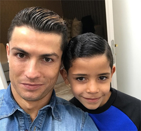
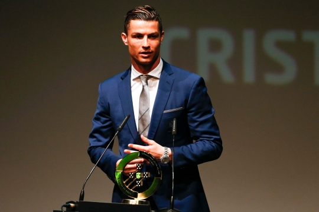

주요수상
FIFA 발롱도르 4회 수상
UEFA 챔피언스 리그 득점왕 5회 수상
UEFA 유럽 최우수 선수상 3회 수상
주요경력
1997 ~ 2002 : 스포르팅 리스본
2003 ~ 2009 : 맨체스터 유나이티드
2009 ~ : 레알 마드리드
2004 ~ : 포르투갈 국가대표
통산 클럽 기록
2002 ~ 현재 : 701경기 513골 175 도움
통산 국가대표 기록
2003 ~ 현재 : 137경기 70골 23도움
[WC 유럽 예선] '돌아온 호날두' 클래스를 입증하다2017.03.26 오전 06:45 스포티비뉴스
크리스티아누 호날두에 의한 경기였다.
포르투갈은 26일(한국 시간) 포르투갈 리스본에서 열린 2018 러시아 월드컵 유럽예선 B조 5차전 헝가리전에서 안드레 실바의 선제골과 호날두의 멀티골을 더해 3-0 대승을 거뒀다.
최근 호날두를 향한 비판이 거셌다. 예전과 다르게 문전에서 실수가 잦았다. 호날두 최고의 장점인 득점이 줄었다. 대신 도움이 늘었다. 하지만 '득점=호날두' 공식이 깨진 건 소속 팀과 호날두 개인 입장에선 달가운 소식이 아니었다.
호날두는 국가 대표 팀 유니폼을 입고 우리가 알던 호날두로 돌아왔다.
호날두 A매치 69호 골호우 세레모니 호우~
전반 안드레 실바의 득점 과정에서 날렵한 모습을 보인 호날두는 전반 36분 벼락같은 슈팅으로 팀의 두 번째 득점을 만들었다. 사실상 쐬기골이었다.
후반엔 전면특허 '무회전 프리킥'으로 세 번째 득점을 만들었다. 호날두는 A매치 137경기에 나서 70호 골을 기록했다. 독일의 레전드 미로슬라프 클로제와 1골 차이로 다가섰다. 역대 유럽 A매치 최다 득점 3위에 한 발 더 다가섰다.
호날두 A매치 70호 골다시한번 호우~
포르투갈(승점 12점 4승 1패)은 현재 B조 2위에 머물고 있다. 선두 스위스가 5전 전승으로 앞서 나가 있는 상황에서 호날두의 득점 감각 회복은 포르투갈 대표 팀에 희소식이다.
호날두, 또 대리모로 쌍둥이 아빠 된다
2017-03-14 03:08 조선일보

호날두(왼쪽)와 장남 호날두 주니어(오른쪽).
포르투갈 축구 스타 크리스티아누 호날두(32)가 곧 쌍둥이 아버지가 된다. 영국 일간 데일리메일은 "호날두의 대리모가 곧 쌍둥이를 낳을 것"이라며 "호날두가 친한 지인들에게 이 소식을 먼저 알렸다"고 13일 전했다.
호날두는 미혼이지만 앞서 2010년에도 대리모를 통해 장남 크리스티아누 호날두 주니어(7)를 얻었다. 영국 언론들은 "호날두는 아들에게 형제가 필요하다고 느낀다. 쌍둥이들은 출생 직후 그의 스페인 집으로 오게 될 것"이라고 전했다. 대리모가 누구인지는 확인되지 않았다. 호날두는 앞서 "아이가 크면 어머니에 대해서 알려주겠지만 대중에는 공개하지 않을 것"이라고 밝혔다.
각국 언론은 호날두가 대리모를 통해 아이를 갖는 이유에 대해 추측성 보도를 쏟아내고 있다. 독일 일간 빌트지는 "호날두가 정식으로 결혼한 뒤 아이를 낳으면 막대한 재산 가운데 상당 부분이 아내에게 돌아가니 이를 피하기 위해 대리모를 선택했을 것"이라 했고, 영국 일간 미러는 "호날두가 한 여성과 일탈을 즐기다 아들이 태어났는데 거금으로 입을 막은 뒤 대리모 출산이라고 주장했을 수 있다"고 했다. 호날두는 한때 러시아계 모델인 이리나 셰이크와 교제했고 현재는 또 다른 모델인 헤오르히나 로드리게스와 열애 중이다.
호날두, 2016-2017 HighLight
2016-11-20 by Premierteam, Youtube
호날두 수상, ‘2016 포르투갈 올해의 선수’ 등극2017.03.21 오전 09:37 인터풋볼

포르투갈 올해의 선수 수상
크리스티아누 호날두(32, 레알 마드리드)가 포르투갈 최고 선수에 선정됐다.
호날두는 21일(한국시간) 포르투갈 이스토릴 회의 센터에서 열린 포르투갈축구협회 주최 시상식에서 '2016 포르투갈 올해의 선수'에 이름을 올렸다.
2016년은 호날두의 해였다. 2015-16 유럽축구연맹(UEFA) 챔피언스리그(UCL)에서 레알 마드리드의 정상 등극을 이끌었고, 유로 2016에서는 포르투갈 유니폼을 입고 사상 첫 우승 트로피를 안겼다. 이 공을 인정 받아 통산 4번째 발롱도르(프랑스풋볼 주관)까지 거머쥐었다. 지난해 12월 일본에서 열린 국제축구연맹(FIFA) 클럽 월드컵에서 4골을 뽑아내며 득점왕, 골든슈, 팀 우승까지 최고의 해를 보냈다. 2016년 무려 55골(레알 42골, 포르투갈 대표팀 13골)을 넣었다.
FIFA 올해의 선수, 발롱도르를 포함해 폴란드 PAP 통신이 1958년부터 주관한 2016 유럽 올해의 스포츠 선수, 유럽축구에이전트협회(EFAA)와 유럽클럽연합(ECA)이 주관하는 글로브 사커 어워드, 월드사커 등 각종 매체는 2016년 최고 선수로 주저 없이 호날두를 꼽았다. 상이란 상은 모조리 휩쓸며 현존 최고 선수 임을 증명했다.
페페, 후이 파트리시우를 제치고 트로피를 차지한 호날두는 "레알 마드리드, 포르투갈 대표팀 동료들, 감독, 스태프, 팬들께 고마움을 전하고 싶다"는 수상 소감을 밝혔다.